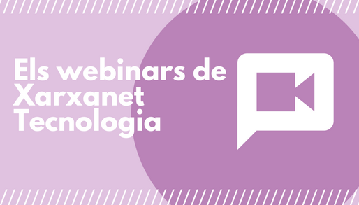
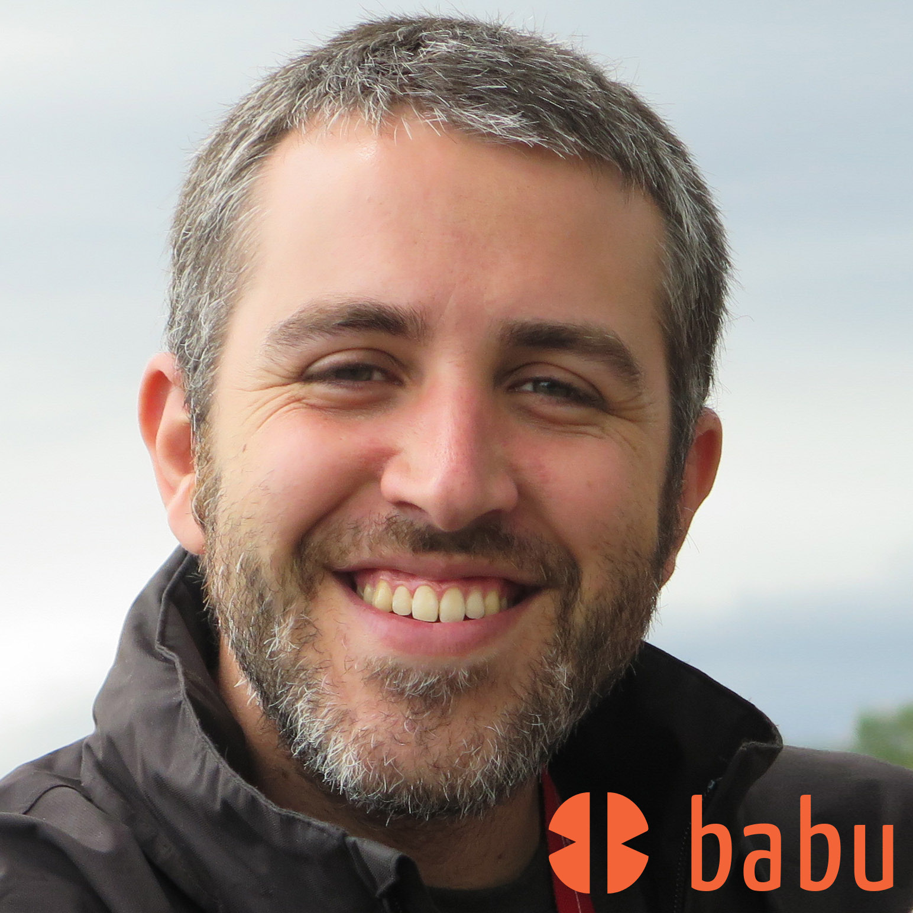
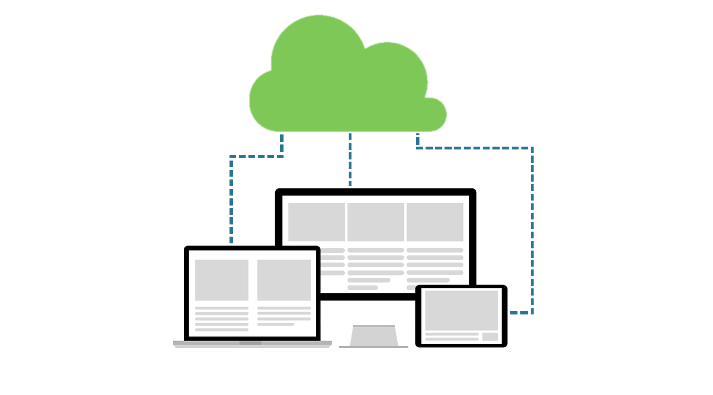
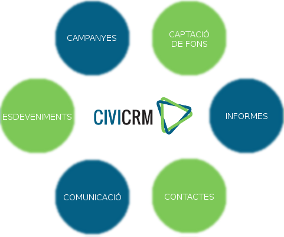
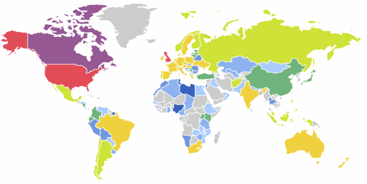

«Eines de gestió per a entitats II. CiviCRM»
dit i fet per babu | @francescbassas

Jo
Francesc Bassas i Bullich | www.babu.cat
Ara mateix treballant per
CRM
"Customer Relationship Management"
És un programari pensat per a dur a terme la Gestió de les Relacions dels Clients o, per extensió, dels Contactes d'una empresa o altre tipus d'organització.
CRM
Què és?
CRM
Desfent típics i tòpics
- Un CRM mai és gratis.
- CRM no és acrònim de "Carta a los Reyes Magos" ♚♚♚.
- Un CRM no és un gestor de tasques, ni de projectes, ni un programa comptable.
CRM
Les 3 fases d'un projecte CRM
- Recollida de requisits
- Implementació
- Suport usuaris, manteniment i evolutius
CRM
Consells i avisos per navegants
(I) Aposta pel canvi
La implementació d'un CRM ha de venir acompanyada (1) d'un recolzament decidit i estratègic per part de la direcció de l'entitat i (2) d'un canvi de mentalitat en la manera de treballar d'aquesta ja que caldrà revisar i consensuar molts dels seus processos interns per adaptar-los a aquesta nova eina que passarà a centralitzar gran part del coneixement de l'entitat - el treball col·laboratiu requereix d'un compromís i esforç col·lectiu.
CRM
Consells i avisos per navegants
(II) En la salut i en l'enfermetat
Un projecte CRM és un projecte de durada indefinida. Sempre caldrà donar suport als usaris, fer-hi un manteniment tant preventiu com correctiu i implementar noves funcionalitats que complementin, adaptin o millorin processos de l'entitat.
CRM
Consells i avisos per navegants
(III) Qui fa què?
La identificació inequívoca de com s'assumeixen els diferents rols d'un projecte CRM és un aspecte clau de cara a garantir-ne l'èxit.
Usuaris | Administradors | Formadors | Implementadors | Desenvolupadors
CiviCRM
"Constituent Relationship Management"
És un programari CRM pensat i desenvolupat expressament des del tercer sector i per al tercer sector (però també utilitzat per empreses i altres tipus d'organitzacions).
CiviCRM
Programari lliure
- Garanteix independència tecnològica
- Codi obert
- Basat en la cooperació i la transparència
CiviCRM
Gestió en núvol
CiviCRM
Integració immediata amb la web
El CiviCRM s'instal·la sobre els gestors de continguts més coneguts i per això s'integra fàcilment amb els formularis de la web.
CiviCRM
Característiques
CiviCRM
La comunitat
(I) Activa i transparent
La comunitat de CiviCRM s'articula arreu del món per vetllar entre d'altres coses pel manteniment, suport, desenvolupament i traducció de l'eina.
En aquesta comunitat i participen tant des dels usuaris finals, empreses col·laboradores, implementadors, desenvolupadors i l'equip de CiviCRM.
CiviCRM
La comunitat
(II) Llocs de trobada
- Chat: chat.civicrm.org
- Fòrum: civicrm.stackchange.com
- Trobades globals
- Trobades locals
CiviCRM
Qui l'utilitza?
(I) Algunes organitzacions
- Amnistia Internacional
- Medicos Sin Fronteras
- UNESCO
- Organización Meteorológica Mundial (OMM)
- Oxfam México
- Alboan
- Movimiento por la paz
- Universidad Autonoma de Madrid
- Universidad Carlos III de Madrid
CiviCRM
Qui l'utilitza?
(II) Arreu del món
CiviCRM
En números
(I) Inscripcions a esdeveniments

stats.civicrm.org, gener 2016
CiviCRM
En números
(II) Donatius

stats.civicrm.org, gener 2016
CiviCRM
En números
(III) Contactes

stats.civicrm.org, gener 2016
CiviCRM
Sí, sí,... però quant costa?
- Llicència gratuïta ✓
- Implementació € (despesa inicial)
- Allotjament € (despesa fixa)
- Manteniment, suport i actualitzacions € (despesa variable)
CiviCRM
Per a mostra, uns botons
- Campanya #EmocionsEnJoc Fundació Salut Alta
- Formulari de voluntariat Fundació Migra Studium
- Inscripció de cursos Cristianisme i Justícia
- Donatius Amnistia Internacional
- Subscripció a les llistes d'enviament de CiviCRM.org